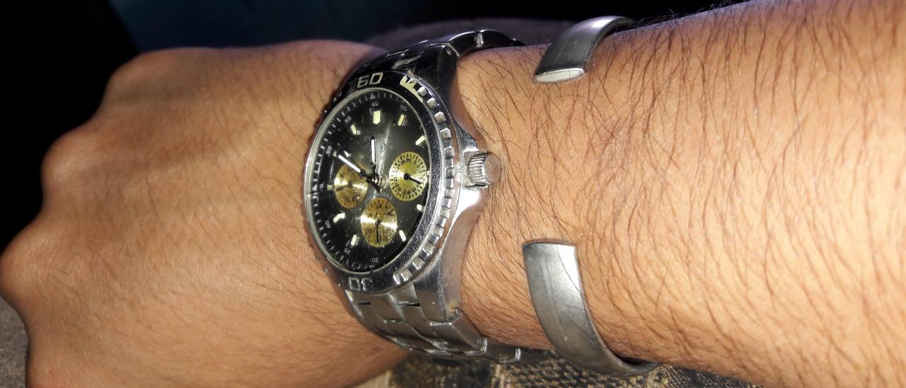

Nunca me eh alejado...
"Por mas lejos que parezcan los extremos, siempre son uno solo"

En millares de vida te buscaré, encontrare la forma por mas ortodoxa que sea, para recentir en mis ojos tu preciosa belleza denuevo...
Me concentrare en amarte sin verte y aunque no tenerte al lado sera una desgracia se que sera mas la felicidad que traeras contigo cuando regreses.
Las palabras con ira solo engrandecen nuestros egos por periodos de tiempo en los cuales pienso hoy y creo que fueron aun mas cortos de lo que recuerdo...
Lo que dije sin pensar, lo que hice sin tener en cuenta el daño ni la reciprocidad que tendria, me llevaron a caer de cara en la realidad inmunda que es no tenerte.
Con cada accion estúpida te siento mas lejos, con ciertas palabras que jamas crei decir se me dificulta verte al lado mio como siempre lo hacía para conciliar el sueño en mis noches de desvelo y me recalco
!Lo estupido que fui!
... Mas aun asi me resigno a perderte por siempre, a alejarte mas de lo que ya siento que eh logrado.
Y aunque en este velo de estrellas en el cual no puedo dormir, diga tu nombre y nadie responda... Con el agobio de no saber que es de ti y con las incesantes ganas de salir a buscarte y peor aun; que el deseo de decirte nuevamente lo hermosa que eres, no lo cumpla esta noche.
Aun asi y con todas las demas atrocidades de no tenerte serca...
Sigo amandote desbordadamente y escribiendo mis escritos en tu nombre.
Pensando en ti noche a noche e intentando distraerme pensando en tus labios, para tomarme un descanso de pensar tanto en tus bellos ojos.
No mentire, no soy el mismo... Estoy adolorido y cansado, agotado de no lograr percibir igual las cosas como; el aire que era mas calido al estar juntos gracias a tu aroma o la felicidad que era llegar a casa donde me esperasen largas horas de hablar contigo con la satisfaccion de decirte cuanto Te amo a la hora que fuese.
Me repito una y otra vez continuamente tus consejos cuando mi mundo se iba a abajo, a nadie mas contaba mis temores o desdenes propios, ni mis logros o derrotas... ¡A nadie mas que a ti!
Y aunque un par de veces sin experiencia me hablabas, era con amor sin medida que me aconsejabas... E imagínarme ser amado por la mujer mas preciosa que ah existido, era y es suficiente para quedarme por mas infructuosa que sea la vida y su cotidianidad.
Asi que aunque parezca derrotado... Imaginame a tu lado con los recuerdos de nuestros mejores momentos, porque mi amor por ti nunca se desvanecera apesar de cuan malos que sean los tiempos.
Escribo esto con el conteo del desgaste de la cera en una vela que ilumina mi patio... Volteo hacia ella para ver cuanto tiempo me queda antes que oscurezca mas y deba intentar descansar.
Y nunca me alejare.
Ya me eh desahogado dulce vela... Mas dejame decirte que conozco a alguien que ilumina mis pozos mentales con la radiancia de mil galaxias juntas, su luz no deja escapatoria, mas provoca un ratro de belleza al cual reaccionó visualizando por horas enteras.
Ella es mi luz dulce vela... De la cual tomaria de la mano y caminara sin ver el sendero donde ni siquiera me importase el lugar en el cual me pediría estar para ella.
Dulce vela, vela de cera... Eh hecho decenas de cosas para tan solo verla por horas o minutos, inclusive segundos cuando despavorido me importaba poco disimularle a alguien que la veia al pasar por su salon, pensando en ella por el transcurso del camino... Y aunque no la viese por meses, escucharla o tan solo percibirla borraba y minimizaba cualquier espera que hubiese hecho por mas largos dias que pasaron.
Mas aun siento miedo vela de cera... Miedo de mi mismo y la consecuencia de mis acciones, miedo no de tener que esperar, sino de que no regrese luego de haber esperado.
Miedo de que ciertas estupidas palabras borren paginas completas que eh escrito enamorado de ella.
Miedo de que mis deseos y sueños con ella, sean estancados por mis actos de poca cordura.
Miedo, miedo de que deje de saber que la amo y aun mas terror, que se le olvide amarme.
Pero son mas los escalofríos pensar que los dos no recordemos como es amarnos... Es por eso que haria cualquier cosa y me adaptaria a lo que sea, por seguirte reviviendo el amor que nos tenemos, momentos que pasamos y sueños que trazamos con temáticas de "Todo lo quiero contigo"
Nunca eh estado mas cuerdo y conciente de lo que hacía, cuando dije y jure a Dios; amarte para toda la vida y enamorarte no solo una vez, sino las veces que hagan falta para que te quedes y si no hacen falta, que sigas sabiendo que mi amor por ti se renueva dia con dia.
Los disfraces calleron, mascaras, orgullos, prejuicios y egocentrismos se desvanecieron como trapos despues de haber sido erróneamente banderas altas.
Hay tanto que decir y hacer, mas el final del comienzo apenas empieza, donde jugara y juzgara por nosotros, el pasar del tiempo y su maravillosa terapia en la cual... Reyes, se veran al espejo y reflejarán simples mortales, compadeciendose de los que consideranban ingratos, luego de darse cuenta de su propia imperfección.
Algunos dejaran de callar sus palabras, otros aprenderan a decirlas...
Un par dira; ¡Cuan arrepentido estoy!
Y otros daran gracias por la misericordia no de ellos, sino de Dios al permitir amarse denuevo.
Velos de estrellas o radiante luz, victorias y derrotas, desdenes y cariños, cosas que creiamos veridicas volviéndose inciertas.
Tanto que transcurrir y caminos infinitos, mas el unico final que existe en la vereda... Es amarte toda la vida.
Y repetirte entre adolescencia, adultez y vejez, infinitas veces que; Te Amo
Se que no soy el mejor...
Cometo errores como todos... Te ofendi sin pensar en lo feliz que me hiciste y me haces cuando estas cerca.
Sin pensar en lo bien que la pasamos, te dije lo que nunca creia que saliera de mi boca, algo que jamas me imagine, algo que si me lo hubiesen dicho antes no hubiese creido.
Pero luego de que la rabia y los problemas pasaron... Volvi a saber que te seguia amando por el sentimineto de soledad que no habia sentido desde noviembre.
Ese donde escucho que denuevo que; no quieren que ni siquiera te dirija la palabra y peor que antes... Nadie quiere saber de mi.
Y realmente tampoco se si tu quieres seguir sabiendo de mi porque veo que me lo eh ganado y es lo que mas me agobia
Aveces pienso que tienes momentos donde te preguntas por mi... Donde quisieras encontrar la forma de llegar a mi o de saber que sigo pensando.
Me pongo a imaginar que aun dedicas unos minutos a mi, ah pensar en nosotros asi como antes lo haciamos todo el dia.
Repetidamente por horas pensando en todo lo que queremos lograr juntos, todo lo que planeabamos.
Llamame loco pero sigo pensando en todo lo que nos proponiamos y sigo creyendo que es es mejor que podria lograr en la vida.
Hago esto sin saber cual sera tu reaccion... Quizas mientras lo hago piensas que no me importa, el cual seria nuestro primer año juntos.
Tenia tantas cosas planeadas para este dia... Ya sabes como era cuando cumpliamos un mes mas, ahora imaginate todo lo que habria hecho por un año.
Habria hecho de todo para agradecerte lo afortunado que me hacias y cuando leo tus cartas, que solo Dios sabe cuantas veces eh leido, veo que
en una de ellas me dices que planeabas darme 12 cartas, una cada mes... Que seguramente hubiesen sido mas de 12.
Aun las espero, tan aferrado a ese deseo como el de volver a besarte y tocar tu piel.
Y aunque tal vez pienses que ya hasta olvide esta fecha o quiza tu ya la olvidaste... Yo sigo teniendola presente como ese "SI" que me hizo, hace y seguira haciendo el hombre mas afortunado de la historia.
Por eso hago todo esto... Y creeme que las cosas aqui no van del todo bien, e escapado de caer muchas veces y aunque quiera dejar todo atras, lo unico que me mantiene de pie sigue siendo tu voz diciendome "No me dejes sola"
Sabes que nunca lo haria... Jamas te dejaria sola en un lugar como este, tan morbido e insenzato y aunque parezca que me eh alejado kilometros de ti, siempre estoy al pendiente de si en caso me necesitases.
Se que no puedes tomar por completo todas tus desiciones y acciones, es algo que no te reprocho porque aunque parezca que yo tengo liberta, sabes que estoy mas atrapado que cualquiera en mi propio ser.
Pero no quiero seguir lastimandote por estar muy serca o demasiado lejos y ya que las cosas pareciera que empeoraron pense en rendirme, pero tambien sabes que cuando se trata de ti...
Buscaria millares de posibilidades y oportunidades solo para sentirte cerca y seguirte amando.
¡No vuelvas a decirlo! Decir que eres la mala y que no te merezco cuando enrealidad yo te deseo...
No pongas palabras en mi boca... Diciendo que eran largas las horas que te esperaba, cuando por mi propia cuenta y mas conciente que nunca lo hacía.
Lo hacia enamorado... El propio deseo de verte mataba cualquier demora, cuando la recompensa era tenerte cerca por siquiera unos minutos.
Me dices que eras la que comenzaba las "peleas"... Pero eras con quien las solucionaba todas y un par de malos entendidos, nunca me haran olvidar lo mucho que se que me amabas.
¿Que los regalos no eran iguales? Tus cartas las leo siempre, las canciones las escucho y tus manualidades son lo mejor que eh visto... Quizas yo me guiaba por lo caro, pero tu gastabas tiempo, materiales y un amor imprescindible en cada detalle que le agregabas a esas hermosas cartas.
Ademas... El mayor obsequio que me has dado es llamarte "Mi futura esposa" y las decenas de veces que te preocupaste mas por mi que por tu mismo... Aun recuerdo la vez que hasta a tu Madre le mencionaste de como me sentia por usar lentes y la dificultad en mis ojos, te preocupaste mas de lo que yo lo estaba por mi mismo.
Me mostraste parte por parte de la alegria que puede darme la vida... Siendo yo un rebelde, me amanse a tu cariño y me preocupe por guardar mi vida, por el hecho de que la pasaria contigo desde mi juventud...
¡¿Y que si debo esperar 2, 4, 6 años o los que sean?! Eres el amor de mi vida y no me siento bien con nadie que no seas tu y tu divina forma de amar.
¡¿Y que si quizas nos seguimos equivocando por la tensión?! Nunca aprenderianos como se cicatriza la piel, si nunca hubiesemos sufrido una herida.
Pero lo estoy aprendiendo contigo... Y con nadie mas me interesa o interesarias pasar el resto de mi existencia, no quiero que nadie mas escuche mis historias... Porque desde un principio fueron escritas para ti.
¡Asi que no lo vuelvas a decir! Porque ni un millon de fábulas describen lo maravilloso que es amarte.
Y si quieres enmendar algo... Sólo recuérdame como se siente escuchar que me amas denuevo y renovaras cualquier desgaste tanto en mi... Como en ti.
Dale rienda suelta a permitir amarme denuevo... Y recuerda como era escribir historias a mi lado, que era lo que mas nos hacia felices a los dos.
Soñar... Soñar despiertos como seria irnos a dormir juntos.
Abajo... Encontraras un cita "Dia a dia contigo" habra algunas sorpresas y es donde solo tu podras ver lo que es de mi, tratare de hacerlo interesante para ti, te contare historias aparte de la forma mas lirica o de nosotros para no olvidar nuestro «porque»... Y no faltara ningun dia sin que te cuente como estuvo, lo que pienso y como me siento, creo que siempre te interesaba eso y ojala despues de tanto tiempo no te hayas aburrido de como trabaja mi mente.
No tengo ninguna pregunta para ti... Pero me haras saber que no has olvidado ese "Si" cuando sigas la pagina que te rediccionara cuando toques la cita de abajo que te mencione y si en el peor de los casos... No quieres volver a saber de mi y piensas que la fecha ya no importa, solo no lo hagas y en 3 dias luego de que hayas visto esto, me deshare de todo.
Sobre todas la cosas, errores, problemas, risas, logros, fracasos asi como victorias y la desicion que tomes ahora... Quiero que sepas muy bien;
¡QUIERO SEGUIRTE AMANDO LO QUE DURE MI VIDA!
Te ame ayer, Te amo ahora y Te amare toda mi existencia porque nunca habra algo que me haga dejar de hacerlo...